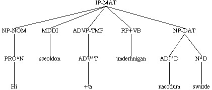
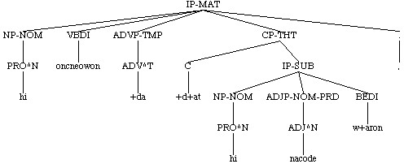

X immediately dominates Y
(X (W ...)
(Y ...)
(W ...))
X immediately dominates Y
(X (W ...)
(Y ...)
(W ...))

This manual includes some features which are not included in the Version 1.0 (CD-rom) release. These are preference files, a new version of remove_nodes, automatic searching of conjunction structures and the coding function.
CorpusSearch is a program which was written by Beth Randall to search corpora in the Penn Treebank format. It is not corpus specific, but will work on any corpus in the correct format. It can be used to search any of the English Parsed Corpora series.
The most important feature of CorpusSearch is that, unlike many search engines for corpora, it was designed to search on its own output files. This makes it relatively slow (large searches last minutes rather than seconds), but greatly increases its utility and simplifies the searches. All relevant data, such as the complete text of the token and the ID tag which tells you where the example comes from, is passed along from search to search.
The structure of tokens
The token is the basic unit of a corpus
file. Each token is enclosed in a wrapper. In
addition to containing the token, the wrapper may also contain the
following:
A corpusfile token:
( (CODE <T03010000800,25>) <-- DOE identifier; unlabelled wrapper
(IP-MAT (NP-NOM (NUM^N An) (N^N woruldcynincg)) <-- token (IP-MAT)
(HVPI h+af+d)
(NP-ACC (NP (Q fela)
(NP-GEN (N^G +tegna)))
(CONJP (CONJ and)
(NP-ACC (ADJ^A mislice) (N^A wicneras))))
(. ;))
(ID copreflives,+ALS_[Pref]:25.14)) <-- ID node
An outputfile token which is a complete corpusfile token:
/~*
Isaac gestrynde Iacob;
(cowsgosp,Mt_[WSCp]:1.2.5)
*~/
(0 (0 CODING 850) <-- CODING node; wrapper indexed 0
(1 IP-MAT (2 NP-NOM (3 NR^N Isaac))
(4 VBD gestrynde)
(5 NP-ACC (6 NR^A Iacob))
(7 . ;))
(ID cowsgosp,Mt_[WSCp]:1.2.5))
An outputfile token that has been extracted from a corpusfile token; the
full token is provided by the ur-text
/~*
& his m+agas hine feden, gif he self mete n+abbe. <-- ur-text
(colawaf,LawAf_1:1.2.7)
*~/
/*
13 IP-SUB: 20 NEG+HVPS n+abbe
*/
(NODE (13 IP-SUB (14 NP-NOM (15 PRO^N he) <-- wrapper labelled NODE
(16 ADJP-NOM (17 ADJ^N self)))
(18 NP (19 N mete))
(20 NEG+HVPS n+abbe))
(ID colawaf,LawAf_1:1.2.7))
Tree structure
The English Parsed Corpora series uses limited hierarchical bracketing made
up of labelled parentheses to represent syntactic trees. The following
examples are from the York-Toronto-Helsinki Parsed Corpus of Old English Prose
(YCOE).
(NODE (IP-MAT (NP-NOM (PRO^N He))
(VBD lufode)
(ADVP (ADV swa) (ADV +teah))
(NP-ACC (D^A +done) (ADJ^A halgan) (N^A w+ar))
(. ,))
(ID coaelive,+ALS_[Sebastian]:11.1216))

( (IP-MAT (NP-NOM (PRO^N hi))
(VBDI oncneowon)
(ADVP-TMP (ADV^T +da))
(CP-THT (C +d+at)
(IP-SUB (NP-NOM (PRO^N hi))
(ADJP-NOM-PRD (ADJ^N nacode))
(BEDI w+aron)))
(. ,))
(ID cootest,Gen:3.7.132))

It is useful to think of the parse in terms of a tree, since this is how
CorpusSearch thinks of it. Relations on the tree are defined with respect
to nodes. A node is any label in the tree; in the parse, nodes are represented as a labelled open parenthesis. In
the examples above IP-MAT, NP-NOM, PRO^N, ADVP, ADV^T, C, VBDI
etc. are all nodes. Terms used to define nodes in relation to other nodes
are the same as those used in family trees (mothers, daughters, sisters,
descendants).
Defining relations on trees
Tree structures can be defined by a combination of two relations:
dominance and precedence. On the tree, a
node X dominates a node Y, if Y is a descendant of X; and in the
parse, a node X dominates a node Y, if Y is contained within the
parentheses labelled by X. X immediately
dominates Y if no other node intervenes between X and Y.
X dominates Y:
(X (Z (W...)
(W ...)
(Y ...)))
X immediately dominates Y
(X (W ...)
(Y ...)
(W ...))
Precedence in CorpusSearch is defined over sisters; that is, over two or
more nodes that are immediately dominated by the same node (the
mother). Therefore, in the tree a node X precedes a node Y, if X and
Y are sisters (i.e., have the same mother) and X is to the left of Y. In
the parse, X precedes Y, if X and Y are immediately dominated by the same
node, and X is to the left of Y. (In the parse as it appears on the page, X
may be physically above Y, or to its left, because of the way the parses
are lined up, but the relations are the same.) X immediately
precedes Y if no other node appears between X and Y. All the basic
search functions in CorpusSearch are based on these two concepts.
X precedes Y
(M (X ...)
(W ...)
(Y ...)
(Z ...))
or
(M (X ...) (W ...) (Y ...) (Z ...))
 X immediately precedes Y
(M (W ...)
(X ...)
(Y ...)
(Z ...)))
or
(M (W ...) (X ...) (Y ...) (Z ...)))
X immediately precedes Y
(M (W ...)
(X ...)
(Y ...)
(Z ...)))
or
(M (W ...) (X ...) (Y ...) (Z ...)))

File Type Extension query file .q corpus file .psd output file .out
Exactly how you run CorpusSearch depends on your platform (Windows, Mac, unix, etc.). Instructions for the different platforms can be found on the CorpusSearch CDRom . See CorpusSearch for Windows for a set of simple step-by-step instructions for working with CorpusSearch under Windows.Query File Output File nouns.q nouns.out
The preface
The preface contains at least the following information:
begin_remark:
this query looks for any negative constituent
end_remark
/* PREFACE: regular output file. CorpusSearch copyright Beth Randall 2000. Date: Tue Jul 16 11:28:11 GMT+01:00 2002 command file: neg.q output file: neg.out remark: this query looks for any negative constituent node: IP* query: (NEG* exists) */
The body
The body of the output files contains the hits. Each input file has its own
section with a HEADER and FOOTER. The header lists the source file, while
the footer lists the source file, number of hits, and number of tokens
searched. In between the header and footer are the hits.
Each token matched by the query is printed in the following format. The first block is the text of the original corpus file token. This is referred to as the ur-text. It is provided so that the context of the NODE is always available even though parts of it may not be printed in parsed form./* HEADER: source file: coaelive.o3.psd */ ... /* FOOTER source file: coaelive.o3.psd hits found: 1236 tokens containing the hits: 1074 total tokens searched: 8006 */
The second block is called the vector. This tells you what CorpusSearch has matched to each of the search terms in your query. The query which produced the token below is
The first item in the vector, 99 IP-SUB:, is the NODE. It is followed by a colon and then the search terms that have been matched. In this case the search term NEG* is matched by 108 NEG+HVDI n+afdon. The numbers in the vector match the indices on the open parens in the token. This makes it easy to find the match, or in case of problems to figure out why you aren't getting the output you expect. It is possible to turn off the indices in the parsed output by setting print_indices to false.node: IP* query: (NEG* exists)
The final block contains the parsed token. Only the part of the token that matches the NODE is printed. This makes it easier to read and saves space. The indices on the open parens start at 99 in this case because the IP-SUB is the 99th node in the original corpus file token. If you want to print the whole token as it appears in the corpus file, you can set nodes_only to false.
/~*
and ic secge +te leof, +t+at ic h+abbe nu gegaderod on +tyssere bec +t+ara
halgena +trowunga +te me to onhagode on englisc to awendene, for +tan +te +du
leof swi+dost and +A+delm+ar swylcera gewrita me b+adon, and of handum
gel+ahton eowerne geleafan to getrymmenne, mid +t+are gerecednysse, +te ge on
eowrum gereorde n+afdon +ar.
(copreflives,+ALS_[Pref]:1.3)
*~/
/*
99 IP-SUB: 108 NEG+HVDI n+afdon
*/
(NODE (99 IP-SUB (100 NP *T*-3)
(101 NP-NOM (102 PRO^N ge))
(103 PP (104 P on)
(105 NP-DAT (106 PRO$^D eowrum) (107 N^D gereorde)))
(108 NEG+HVDI n+afdon)
(109 ADVP-TMP (110 ADV^T +ar)))
(ID copreflives,+ALS_[Pref]:1.3))
The summary
The final section of the output file contains the summary. The summary
lists the names of the command (query/coding) file, the source (input)
file(s), and the output file. It then provides a set of summary statistics
listed by source text.
The summary statistics give the name of the source file(s) along with the number of hits, the number of tokens the hits were found in, and the number of tokens in the file. The first number is generally the most useful since it tells you how many matches were found. The second number is fairly useless. It will always be the same as the first number (if there is only one hit per token) or less if in some cases more than one hit was found in a single token. The last number is generally not very useful when the search was conducted on corpus files since it just tells you how many tokens are in the file. In a search done on a carefully constructed output file that contains only environments in which a match could have been found however, it may indicate something like the application rate of a rule, or the frequencies of two (exhaustive) options. Following the statistics for each input file are the totals.
When a search is run on the output file of a previous search (rather than one or more corpus files), that file is listed as the input file along with the command and output files. The summary statistics, however, continue to list the statistics by source text. The following summary statistics result from running the following query neg-only.q on the output file neg.out, the result of a previous search. Although there is only one input file, the statistics for each source text included in that file are calculated and printed./* SUMMARY: regular output file. command file: neg.q output file: neg.out source files, hits/tokens/total colaw1cn.o3.psd 27/21/146 colaw2cn.o3.psd 69/57/304 colaw5atr.o3.psd 14/13/79 colaw6atr.o3.psd 30/22/111 colawaf.o2.psd 38/35/210 colawafint.o2.psd 74/61/145 colawger.o34.psd 10/9/35 colawine.ox2.psd 53/42/194 colawnorthu.o3.psd 14/9/98 colawwllad.o4.psd 4/3/14 grand total hits : 333 grand total tokens containing hits: 272 grand total tokens searched: 1336 */
node: IP* query: (IP* iDoms NEG)
/* SUMMARY: regular output file. command file: neg-only.q input file: neg.out output file: neg-only.out source files, hits/tokens/total colaw1cn 12/11/27 colaw2cn 55/51/69 colaw5atr 10/10/14 colaw6atr 23/21/30 colawaf 24/23/38 colawafint 66/61/74 colawger 9/9/10 colawine 26/24/53 colawnorthu 10/9/14 colawwllad 2/2/4 grand total hits : 237 grand total tokens containing hits: 221 grand total tokens searched: 333 */
The node
Every query requires a specification of a node, introduced by the
node command, in order to run. The node gives CorpusSearch a domain
to search within. Setting the node properly is key to using CorpusSearch
effectively. It is therefore discussed in detail in the section Setting the node. Until that point we will
always set the node as IP*, which is a good general default.
node: IP*
The query
The query tells CorpusSearch the structure to search for and is introduced
by the command query:. The simplest query consists of a
single search function call. Each call is enclosed in parentheses.
In this query we can identify the following parts: IP* and NEG are search terms while iDominates (usually shortened to iDoms) is a search function.node: IP* query: (IP* iDominates NEG)
Search terms are always node labels. The asterisk following the IP indicates any label starting with IP, including IP itself; that is, * can match any number of things or nothing. The asterisk can be used anywhere within a search term. *VB for instance will match labels like RP+VB and NEG+VB and NP*ADT will match for example NP-ACC-ADT, NP-DAT-ADT, NP-DAT-RFL-ADT, NP-ADT, etc.
Most search functions in CorpusSearch are binary (take two arguments), but a few (such as exists) take only one argument:
node: IP* query: (NEG exists)
Logical operators
Search terms (which are node labels) may also contain the logical operators
NOT represented by an exclamation point
(!), and OR represented by a vertical bar (|). Note
that these operators only work on search terms and not on
search functions. The third logical operator AND is used
to join more than one search function call. It is discussed in the section
on writing multi-call queries.
NOT (!)
CorpusSearch interprets NOT, as for example in !NEG, as
meaning something which is not NEG. It does not interpret it as
meaning nothing at all. This is fairly straightforward when the
search function is a form of immediately
dominates since nodes (apart from the terminals, i.e., the words of
the text) always dominate something. It is important to understand,
however, if there is more than one node that could satisfy the condition,
each one has to satisfy it. So, the search-function call (IP* iDoms
!NEG) is interpreted as "IP* immediately dominates one or more nodes,
and none of those nodes is NEG", rather than "IP* immediately dominates at
least one node that is not NEG".
With precedes, however, unlike with iDominates, a node may not be preceded by anything at all, as for instance if the node is sentence initial. The query:
will only find tokens in which something which is not NEG precedes the verb. It will not find verb-initial tokens like the following.query: (!NEG iPrecedes VB*)
( (IP-MAT-SPE (VBN gebletsod)
(BEPI is)
(NP-NOM (PRO^N he)
(NP-NOM-PRN (NR^N God)))
(. .)) (ID copreflives,+ALS_[Pref]:19.12))
The same is true in final position. A query like
will not find adjective-final NPs like +Ta iudeiscan in the token below because no sister node follows the adjective in these cases.node: NP* query: (ADJ^N iPrecedes !N^N)
To find initial and final nodes in a constituent, use iDomsNumber and iDomsLast( (CODE <T03020000600,11>) (IP-MAT (NP-NOM (D^N +Ta) (ADJ^N iudeiscan)) (VBDI axodon) (NP-ACC (NR^A Crist)) (CP-QUE (WNP-NOM-1 (WPRO^N hw+at)) (C 0) (IP-SUB (NP-NOM-PRD *T*-1) (NP-NOM (PRO^N he)) (BEDS w+are))) (. .)) (ID coaelive,+ALS_[Christmas]:11.8))
OR (|)
Like NOT, OR works only on search terms not on
search functions. It allows a list of alternates to be used as a
single search term. For instance, in order to search for every possible type
of finite verb the appropriate search term for the YCOE is:
This might be used in a query to find all IPs with finite verbs, such as the following:*MDP*|*MDD*|*HVP*|*HVD*|*BEP*|*BED*|*VBP*|*VBD*|*AXD*|*AXP*
To avoid having to type such monstrosities too often, it pays to use a definition file.node: IP* query: (IP* iDoms *MDP*|*MDD*|*HVP*|*HVD*|*BEP*|*BED*|*VBP*|*VBD*|*AXD*|*AXP*)
When using OR, the alternatives must be listed in the same order for same instance to apply; that is, NP-NOM|NP-ACC is not the same as NP-ACC|NP-NOM.
Exists
The simplest CorpusSearch command specifies only that a node exists. This
command may be useful in initial exploratory searches, as for instance, if
you want to find all the relative clauses in the corpus, or all tokens
containing any kind of negative, but for more detailed searches it is not
necessary since using a node as a search term forces it to exist.
A query such as this:
will print out as separate tokens every IP in the corpus that contains the node NEG or any node that starts with NEG, since the asterisk indicates "anything", such as, NEG+CONJ, NEG+ADV, NEG+VBPI, etc., as for example:node: IP* query: (NEG* exists)
/~*
Se f+ader is angin of nanum o+drum,
(coaelive,+ALS_[Christmas]:35.24))
*~/
/*
2 IP-MAT: 12 NEG+Q^D nanum
*/
(NODE (2 IP-MAT (3 NP-NOM (4 D^N Se) (5 N^N f+ader))
(6 BEPI is)
(7 NP-NOM-PRD (8 N^N angin))
(9 PP (10 P of)
(11 NP-DAT (12 NEG+Q^D nanum) (13 ADJ^D o+drum)))
(14 . ,))
(ID coaelive,+ALS_[Christmas]:35.24))
Be careful not to use commands such as (IP* exists) on the entire
corpus because the resultant output will contain virtually every token in
the entire corpus and will therefore be extremely large, almost certainly
too large for your software to handle.
Precedes
A node X precedes a node Y, if X and Y are sisters and X is to the
left of Y. Simple precedes doesn't specify the distance between the
two search terms; as long as X and Y are sisters, and X is to the left of
Y, no matter how far, X precedes Y. A query such as the following will find
all IPs where an object precedes the subject; the object may
in fact immediately precede the subject as in the first example, or
there may be intervening material as in the second.
node: IP* query: (NP|NP-ACC|NP-GEN|NP-DAT precedes NP-NOM)
/~*
an is hwilwendlic, +te h+af+d +ag+der ge ordfrumman ge ende; +t+at synd nytenu
and ealle sawullease +ting +te ongunnan +ta +ta hi God gesceop, and +aft
ge+andia+d and to nahte gewur+da+t.
(coaelive,+ALS_[Christmas]:27.21)
*~/
/*
50 IP-SUB: 51 NP-ACC, 53 NP-NOM
*/
(NODE (50 IP-SUB (51 NP-ACC (52 PRO^A hi))
(53 NP-NOM (54 NR^N God))
(55 VBDI gesceop))
(ID coaelive,+ALS_[Christmas]:27.21))
/~*
+Das fif andgitu gewisse+d seo sawul to hire wyllan,
(coaelive,+ALS_[Christmas]:202.161)
*~/
/*
2 IP-MAT: 3 NP-ACC, 8 NP-NOM
*/
(NODE (2 IP-MAT (3 NP-ACC (4 D^A +Das) (5 NUM fif) (6 N^A andgitu))
(7 VBPI gewisse+d)
(8 NP-NOM (9 D^N seo) (10 N^N sawul))
(11 PP (12 P to)
(13 NP (14 PRO$ hire) (15 N wyllan)))
(16 . ,))
(ID coaelive,+ALS_[Christmas]:202.161))
Immediately Dominates (iDoms)
In a tree a node X dominates a node Y, if X contains Y. Immediately
dominates (iDoms) also specifies that the two nodes are exactly one
generation apart. So, X iDominates Y, if Y is a daughter of X, that
is, there are no other nodes between X and Y. Likewise for immediately
precedes (iPrecedes). X iPrecedes Y, if X and Y are sisters, X
is to the left of Y, and no other sisters intervene between X and Y.
For users of CorpusSearch Version 1.0, note that the search-function dominates has been discontinued. Use exists instead. The following two queries are equivalent.
The following query looks for IPs containing accusative pronouns. In the token we can see that CorpusSearch found two structures matching the query: 44 IP-SUB-CON and 57 IP-SUB. Note that the second matching structure (57 IP-SUB), as well as being contained within the first, is written as a separate token below the first. CorpusSearch always prints every matching node as a separate token.node: IP* <-- old-style query using dominates query: (IP* dominates NEG*) node: IP* <-- same query using exists instead query: (NEG* exists)
node: IP*
query: (NP-ACC iDoms PRO^A)
/~*
We awrita+d fela wundra on +tissere bec, for+tan +te God is wundorlic on his
halgum swa swa we +ar s+adon, and his halgena wundra wur+dia+d hine, for+tan
+te he worhte +ta wundra +turh hi.
(copreflives,+ALS_[Pref]:22.13)
*~/
/*
44 IP-SUB-CON: 51 NP-ACC, 52 PRO^A hine
57 IP-SUB: 66 NP-ACC, 67 PRO^A hi
*/
(NODE (44 IP-SUB-CON (45 NP-NOM (46 NP-GEN (47 PRO$ his) (48 N^G halgena))
(49 N^N wundra))
(50 VBPI wur+dia+d)
(51 NP-ACC (52 PRO^A hine))
(53 , ,)
(54 CP-ADV (55 P for+tan)
(56 C +te)
(57 IP-SUB (58 NP-NOM (59 PRO^N he))
(60 VBD worhte)
(61 NP-ACC (62 D^A +ta) (63 N^A wundra))
(64 PP (65 P +turh)
(66 NP-ACC (67 PRO^A hi))))))
(ID copreflives,+ALS_[Pref]:22.13))
(NODE (57 IP-SUB (58 NP-NOM (59 PRO^N he))
(60 VBD worhte)
(61 NP-ACC (62 D^A +ta) (63 N^A wundra))
(64 PP (65 P +turh)
(66 NP-ACC (67 PRO^A hi))))
(ID copreflives,+ALS_[Pref]:22.13))
Immediately precedes (iPrecedes)
Immediately precedes is the same as precedes but requires the two constituents to
be adjacent. If we use the same query with iPrecedes that we
used with precedes, we will get a subset of the examples, namely all
those in which the two constituents adjacent.
node: IP* query: (NP|NP-ACC|NP-GEN|NP-DAT iPrecedes NP-NOM)
/~*
an is hwilwendlic, +te h+af+d +ag+der ge ordfrumman ge ende; +t+at synd nytenu
and ealle sawullease +ting +te ongunnan +ta +ta hi God gesceop, and +aft
ge+andia+d and to nahte gewur+da+t.
(coaelive,+ALS_[Christmas]:27.21)
*~/
/*
50 IP-SUB: 51 NP-ACC, 53 NP-NOM
*/
(NODE (50 IP-SUB (51 NP-ACC (52 PRO^A hi))
(53 NP-NOM (54 NR^N God))
(55 VBDI gesceop))
(ID coaelive,+ALS_[Christmas]:27.21))
Immediately Dominates Only (iDomsOnly)
Another useful variant of dominates is immediately dominates
only (iDomsOnly). X iDomsOnly Y if X immediately
dominates Y but no other nodes; that is, Y is the only daughter of
X. This is useful for finding, for instance, pronominal NPs or all NPs
consisting of only a determiner, etc. The following query will find all
IPs with pronominal subjects.
node: IP*
query: (NP-NOM iDomsOnly PRO^N)
/~*
+Da andwyrde he him +tus,
(coaelive,+ALS_[Christmas]:11.9)
*~/
/*
2 IP-MAT: 6 NP-NOM, 7 PRO^N he
*/
(NODE (2 IP-MAT (3 ADVP-TMP (4 ADV^T +Da))
(5 VBD andwyrde)
(6 NP-NOM (7 PRO^N he))
(8 NP-DAT (9 PRO^D him))
(10 ADVP (11 ADV +tus))
(12 . ,))
(ID coaelive,+ALS_[Christmas]:11.9))
Using just immediately dominates in this query instead of
iDomsOnly produces more examples, most of them of the following or
similar type, which are probably not relevant.
(0 (1 IP-MAT-SPE (2 CONJ and)
(3 NP-NOM (4 PRO^N he)
(5 ADJP-NOM (6 ADJ^N sylf)))
(7 VBPI geedniwa+d)
(8 NP-ACC (9 D^A +tisne) (10 ADJ^A ealdan) (11 N^A middaneard))
(12 . ;))
(ID coaelive,+ALS_[Denis]:32.5814))
The command is always followed by a colon and a space (the space is crucial). Most commands are set as t or f. The two common commands whose value is something other than true or false are node: and query:.nodes_only: t
The following are the most useful basic commands. More advanced commands are discussed below. For a full list of the available commands, see the CorpusSearch Reference Manual.
Setting the NODE
The first step in constructing a query is to set the NODE. This is the node
that CorpusSearch takes as the boundary node for the search. It will search
and print everything below this node in the tree. It is written in caps in
this manual to distinguish it from other nodes, but the actual command to
set the NODE is lower case.
To set the node simply add
this command to your query, where the node following node: is your
chosen NODE:
node: IP*
For most searches you should set the NODE to the minimal constituent that you are interested in; IP* if you are investigating sentential syntax, CP* if you are interested in the CP level, NP* if you are studying the internal syntax of NPs and so on.
Consider again our query to search for negative elements.
If we set the NODE to CP*, we only get results contained within CPs. This will miss a lot of negatives since most negatives are contained within IPs that are not contained within CPs. This is therefore an inappropriate NODE setting for this query.query: (NEG* exists)
node: CP*
query: (NEG* exists)
/~*
Ne secge we nan +tincg niwes on +tissere gesetnysse, for+tan +de hit stod
gefyrn awriten on ledenbocum +teah +te +ta l+awedan men +t+at nyston.
(copreflives,+ALS_[Pref]:12.6)
*~/
/*
33 CP-ADV: 43 NEG+VBDI nyston
*/
(NODE (33 CP-ADV (34 P +teah)
(35 C +te)
(36 IP-SUB (37 NP-NOM (38 D^N +ta) (39 ADJ^N l+awedan) (40 N^N men))
(41 NP-ACC (42 D^A +t+at))
(43 NEG+VBDI nyston)))
(ID copreflives,+ALS_[Pref]:12.6))
The same query with the NODE set to IP* will find all the negatives
within IPs.
node: IP-*
query: (NEG* exists)
(NODE (36 IP-SUB (37 NP-NOM (38 D^N +ta) (39 ADJ^N l+awedan) (40 N^N men))
(41 NP-ACC (42 D^A +t+at))
(43 NEG+VBDI nyston))
(ID copreflives,+ALS_[Pref]:12.6))
It finds all the negatives found in the previous search, plus many
more. But it prints them differently, with some type of IP as the
highest node. The query with CP* as the NODE found 575 hits. When
IP* is the NODE it finds 1215.
If we set NP* as the NODE with the same query, we get a subset of the data from the previous search, namely only negatives contained within NPs. The token above found by the previous two searches will not be found by this search since the negative 43 NEG+VBDI is not dominated by an NP. Here the negative is 8 NEG+Q^A
node: NP-*
query: (NEG* exists)
/~*
Ne secge we nan +tincg niwes on +tissere gesetnysse, for+tan +de hit stod
gefyrn awriten on ledenbocum +teah +te +ta l+awedan men +t+at nyston.
(copreflives,+ALS_[Pref]:12.6)
*~/
/*
7 NP-ACC: 8 NEG+Q^A nan
*/
(NODE (7 NP-ACC (8 NEG+Q^A nan) (9 N^A +tincg)
(10 ADJP-GEN (11 ADJ^G niwes)))
(ID copreflives,+ALS_[Pref]:12.6))
Using NP-* as the NODE would be appropriate with this query if you
were only interested in nominal negatives. But note that you may get some
sentential negatives, if, for instance, they are contained within a
relative clause, because the relative clause is dominated by an NP. In the
token below the NODE is 8 NP-ACC which dominates a relative clause
within which is the negative 20 NEG. To avoid this kind of outcome
you need to use remove_nodes to prepare
the file for searching before undertaking this search. See an illustration
here.
/~*
hwilon heo wyle wytan +ta +ding +te heo +ar ne cu+de.
(coaelive,+ALS_[Christmas]:222.178)
*~/
/*
8 NP-ACC: 20 NEG ne
*/
(NODE (8 NP-ACC (9 D^A +ta) (10 N^A +ding)
(11 CP-REL (12 WNP-1 0)
(13 C +te)
(14 IP-SUB (15 NP *T*-1)
(16 NP-NOM (17 PRO^N heo))
(18 ADVP-TMP (19 ADV^T +ar))
(20 NEG ne)
(21 MDD cu+de))))
(ID coaelive,+ALS_[Christmas]:222.178))
Continuing with our NODE experiment, we can now try specifying NEG*
as the NODE. This gives us minimal output; only the NEG node itself
is printed. If your interest is (for some reason) in knowing how many
negatives occur in some text or in the corpus as a whole, this is the query
for you, because it does not depend on the negative being contained in any
particular node. The total for this query is 1715, far more than for any of
the previous searches. To find out why this is so, read the section on How CorpusSearch counts.
node: NEG*
query: (NEG* exists)
/~*
Ne secge we nan +tincg niwes on +tissere gesetnysse, for+tan +de hit stod
gefyrn awriten on ledenbocum +teah +te +ta l+awedan men +t+at nyston.
(copreflives,+ALS_[Pref]:12.6)
*~/
/*
3 NEG Ne
8 NEG+Q^A nan
43 NEG+VBDI nyston
*/
(NODE (3 NEG Ne)
(ID copreflives,+ALS_[Pref]:12.6))
(NODE (8 NEG+Q^A nan)
(ID copreflives,+ALS_[Pref]:12.6))
(NODE (43 NEG+VBDI nyston)
(ID copreflives,+ALS_[Pref]:12.6))
Since CorpusSearch only searches below the specified NODE, if you don't set
the NODE appropriately, you may get erroneous results; for instance, if you
set the NODE to IP-* and try to access the CP level, you will
only get results from CPs embedded under the NODE and will not
access any CP-level material above the NODE. The following query looks for
CPs with wh-words. With the NODE set as IP* only embedded
results will be reported, relative clauses, indirect questions,
etc. Because direct questions are CPs at the highest level, they
will not be found in a search with an IP node. This query with the
NODE set to IP* finds 2010 hits, with CP* as the NODE it
finds 2221.
The NODE is also critical in determining how CorpusSearch counts the hits for reporting in the summary statistics so it is important to use the appropriate NODE in order for the statistics to be meaningful. This is especially true when using multi-call queries. More details about how to set the NODE properly in this situation are contained in the section Controlling the NODE in multi-call queries.query: (CP* iDoms W*)
In default mode CorpusSearch only prints the NODE, omitting all material outside it. To print the whole token as it appears in the corpusfile, set nodes_only to false. Note that CorpusSearch still uses the NODE as the search domain in this case, it just prints the whole token.
You can use a list as the NODE setting, as for example:nodes_only: f node: IP-*
When searching output files always include NODE as one of the terms in in the list.node: IP-MAT*|IP-SUB* node: CP-REL*|CP-FRL*|CP-QUE*
If you commonly use a particular NODE setting, set the NODE in a preference file.node: IP*|NODE
remove_nodes
The default setting for remove_nodes is false. When set to true, all
embedded nodes that match the NODE are removed along with all their
contents and replaced by the notation RMV: followed by the first
three words (or traces) dominated by the NODE. "Match" is defined as
starting with the same two letters. So if the NODE is set to
IP-MAT*, all nodes starting with IP including IP-SUB,
IP-INF, IP-SMC-SPE, etc. are removed. Likewise if the NODE is set to
CP* all nodes starting with CP will be removed. If the node
that is removed matches the query it is printed beneath as a separate
token; otherwise it is thrown away. In the examples below both the matrix
and the embedded clause contain a particle (RP). The embedded clause
is removed and printed below because it also matches the query.
remove_nodes: t
node: IP*
query: (RP exists)
/~*
and wearp upp +ta duru, +t+at +da scytelses to burston,
(coaelive,+ALS_[Basil]:347.682)
*~/
/*
1 IP-MAT: 5 RP upp
12 IP-SUB: 16 RP to
*/
(0 (1 IP-MAT (2 CONJ and)
(3 NP-NOM *con*)
(4 VBDI wearp)
(5 RP upp)
(6 NP-ACC (7 D^A +ta) (8 N^A duru))
(9 , ,)
(10 CP-ADV (11 C +t+at)
(12 IP-SUB RMV:+da_scytelses_to...))
(18 . ,))
(ID coaelive,+ALS_[Basil]:347.682))
(NODE (12 IP-SUB (13 NP-NOM (14 D^N +da) (15 N^N scytelses))
(16 RP to)
(17 VBDI burston))
(ID coaelive,+ALS_[Basil]:347.682))
There are two purposes for remove_nodes The first is simply to make
the output shorter and easier to negotiate by removing extraneous
material. The second and more important is to allow the user to create
files which contain only relevant material to facilitate further
searching. The NODE command ensures that
CorpusSearch only searches below the relevant NODE omitting all extraneous
material above it, but often there is embedded material (subordinate
clauses, etc.) that are also either irrelevant or constitute a token to be
searched in their own right. Remove_nodes allows this material
either to be removed entirely if it is irrelevant or to be printed
separately as a token.
Compare the output of the following query with and without remove_nodes set to true. In the first, without remove_nodes, the query finds two hits as listed in the vectors and CS prints and counts both instances. But notice that the second hit, in 51 IP-SUB is printed twice, once embedded in the first token and once by itself. When remove_nodes is set to true, on the other hand, the second token is only printed once; the embedded instance has been removed. In both cases the same number of tokens have been counted and printed, but the second output file will be useful for further searching whereas the first will not because it contains some tokens twice and further searches on this file will give erroneous results.
node: IP*
query: (NP-NOM iDominates PRO^N)
/~*
awurpan +t+as halgan lic on +t+are widgillan s+a, mid +tam $hefegum stanum,
swa swa hi het +te dema, +t+at he huru ne sceolde +t+are s+a +atberstan, +teah
+te he +t+are eor+dan +aror +atburste.
(coaelive,+ALS_[Vincent]:264.7974)
*~/
/*
37 IP-SUB: 38 NP-NOM, 39 PRO^N he
51 IP-SUB: 52 NP-NOM, 53 PRO^N he
*/
(NODE (37 IP-SUB (38 NP-NOM (39 PRO^N he))
(40 FP huru)
(41 NEG ne)
(42 MDD sceolde)
(43 NP-DAT (44 D^D +t+are) (45 N^D s+a))
(46 VB +atberstan)
(47 , ,)
(48 CP-ADV (49 P +teah)
(50 C +te)
(51 IP-SUB (52 NP-NOM (53 PRO^N he))
(54 NP-DAT (55 D^D +t+are) (56 N^D eor+dan))
(57 ADVP-TMP (58 ADVR^T +aror))
(59 VBDS +atburste))))
(ID coaelive,+ALS_[Vincent]:264.7974))
(NODE (51 IP-SUB (52 NP-NOM (53 PRO^N he))
(54 NP-DAT (55 D^D +t+are) (56 N^D eor+dan))
(57 ADVP-TMP (58 ADVR^T +aror))
(59 VBDS +atburste))
(ID coaelive,+ALS_[Vincent]:264.7974))
remove_nodes: t
node: IP-*
query: (NP-NOM iDominates PRO^N)
/~*
awurpan +t+as halgan lic on +t+are widgillan s+a, mid +tam $hefegum stanum,
swa swa hi het +te dema, +t+at he huru ne sceolde +t+are s+a +atberstan, +teah
+te he +t+are eor+dan +aror +atburste.
(coaelive,+ALS_[Vincent]:264.7974)
*~/
/*
37 IP-SUB: 38 NP-NOM, 39 PRO^N he
51 IP-SUB: 52 NP-NOM, 53 PRO^N he
*/
(NODE (37 IP-SUB (38 NP-NOM (39 PRO^N he))
(40 FP huru)
(41 NEG ne)
(42 MDD sceolde)
(43 NP-DAT (44 D^D +t+are) (45 N^D s+a))
(46 VB +atberstan)
(47 , ,)
(48 CP-ADV (49 P +teah)
(50 C +te)
(51 IP-SUB RMV:he_+t+are_eor+dan...)))
(ID coaelive,+ALS_[Vincent]:264.7974))
(NODE (51 IP-SUB (52 NP-NOM (53 PRO^N he))
(54 NP-DAT (55 D^D +t+are) (56 N^D eor+dan))
(59 VBDS +atburste)) :
(ID coaelive,+ALS_[Vincent]:264.7974))
The point of including the first three words (technically, the first three
terminal nodes, since traces count here) is to make it possible to
differentiate between removed nodes that contain only a trace and those
that have lexical content. Any trace that entirely occupies a CP or IP node
by itself is of the *ICH* type (see the
Annotation Reference Manual: Scrambling and Extraposition). Therefore
these nodes, when their contents are removed, will contain only
RMV:*ICH*-#... where # is a digit. So if you're using
remove_nodes and you want to ignore traces, you need to add both
regular traces and removed traces to the ignore list like this:
add_to_ignore: \**|RMV:\*ICH*Note that it's not enough for RMV to begin with any trace, since traces of wh-movement (*T*) will be followed by lexical material.
(IP-SUB-SPE RMV:*T*-1_her_nu...) <-- RMV beginning with wh-trace (*T*) (CP-REL RMV:*ICH*-1...) <-- RMV with *ICH* traceIt is important to understand that remove_nodes is a printing command which applies after the search has been conducted. This means (weirdly) that it is technically possible for remove_nodes to remove (and therefore not print) a hit, although it will still count it. To avoid this outcome, read the section on Multi-call queries.
ignore_nodes and add_to_ignore
CorpusSearch has the capacity to ignore nodes when conducting a search. In
the general case these nodes (punctuation, comments and various kinds of
identifying information (titles, page numbers, etc.)) are not useful for
linguistic analysis and are ignored by default. Sometimes however it is
useful to ignore other nodes; traces, for instance, are often better
ignored. Any node or list of nodes can be added to the ignore_nodes
list with the add_to_ignore command. These nodes will then be
ignored for the purposes of that particular query. Use the command
to ignore traces since all traces in the corpus begin with an asterisk. \* indicates the asterisk (\ tells CorpusSearch to take the asterisk literally rather than as a wild card), while the second asterisk stands for "followed by anything".add_to_ignore: \**
Advanced uses of add_to_ignore
nodes_only
The nodes_only command tells CorpusSearch to print only the NODE
rather than the whole token. The default is true. If you want to print the
whole token set nodes_only to false.
In default mode a query like the following prints only the NODE:nodes_only: f
node: NP*
query: (NP* iDoms Q*)
/~*
Sume syndan creopende on eor+dan mid eallum lichoman, swa swa wurmas do+d.
(coaelive,+ALS_[Christmas]:54.41)
*~/
/*
3 NP-NOM: 4 Q^N Sume
13 NP-DAT: 14 Q^D eallum
*/
(NODE (3 NP-NOM (4 Q^N Sume))
(ID coaelive,+ALS_[Christmas]:54.41))
(NODE (13 NP-DAT (14 Q^D eallum) (15 N^D lichoman))
(ID coaelive,+ALS_[Christmas]:54.41))
while with nodes_only set to false the same token appears as
follows. Note that with nodes_only set to false, the token is only
printed once, although two NODEs are counted. nodes_only only
affects the appearance of the output, it does not affect how CorpusSearch counts. In general it is easier
to work with the default, that is, nodes_only set to true. The whole
text of the token is included in the ur-text in any case for reference.
nodes_only: f
node: NP*
query: (NP* iDoms Q*)
/~*
Sume syndan creopende on eor+dan mid eallum lichoman, swa swa wurmas do+d.
(coaelive,+ALS_[Christmas]:54.41)
*~/
/*
3 NP-NOM: 4 Q^N Sume
13 NP-DAT: 14 Q^D eallum
*/
(0 (1 CODE <T03020002400,54>)
(2 IP-MAT (3 NP-NOM (4 Q^N Sume))
(5 BEPI syndan)
(6 VAG creopende)
(7 PP (8 P on)
(9 NP (10 N eor+dan)))
(11 PP (12 P mid)
(13 NP-DAT (14 Q^D eallum) (15 N^D lichoman)))
(16 , ,)
(17 PP (18 ADV swa)
(19 P swa)
(20 CP-CMP (21 WADVP-1 0)
(22 C 0)
(23 IP-SUB (24 ADVP *T*-1)
(25 NP-NOM (26 N^N wurmas))
(27 VBPI do+d))))
(28 . .))
(19 ID coaelive,+ALS_[Christmas]:54.41))
print_indices
In default mode CorpusSearch prints an index on every open
parenthesis. This index is useful for matching the vector information to the parsed token. You can turn
print_indices off by setting it to false.
The two versions of the same token are illustrated below.print_indices: f
/~*
and hi +t+ar bebyrgdon +tone bisceop Philippum.
(coaelive,+ALS_[Eugenia]:310.380)
*~/
/*
1 IP-MAT: 5 ADVP-LOC
*/
(0 (1 IP-MAT (2 CONJ and)
(3 NP-NOM (4 PRO^N hi))
(5 ADVP-LOC (6 ADV^L +t+ar))
(7 VBDI bebyrgdon)
(8 NP-ACC (9 D^A +tone)
(10 N^A bisceop)
(11 NP-ACC-PRN (12 NR^A Philippum)))
(13 . .))
(ID coaelive,+ALS_[Eugenia]:310.380))
/~*
and hi +t+ar bebyrgdon +tone bisceop Philippum.
(coaelive,+ALS_[Eugenia]:310.380)
*~/
/*
1 IP-MAT: 5 ADVP-LOC
*/
( (IP-MAT (CONJ and)
(NP-NOM (PRO^N hi))
(ADVP-LOC (ADV^L +t+ar))
(VBDI bebyrgdon)
(NP-ACC (D^A +tone)
(N^A bisceop)
(NP-ACC-PRN (NR^A Philippum)))
(. .))
(ID coaelive,+ALS_[Eugenia]:310.380))
Any number of search function calls can be conjoined by the logical operator AND and sent to CorpusSearch. The outcome should be tokens that satisfy all the conditions. In order to write effective multi-call queries it is necessary to know how to specify that identically-specified search terms in the query must or must not apply to the same node.query: (IP* iDoms NP-ACC)
Same instance
CorpusSearch has a built-in same instance function that applies
when AND is used and forces identically-specified search terms to
refer to the same node. Therefore if you want every mention of
NP-NOM in the query below to apply to the same NP-NOM in the
parse you don't have to do anything. CorpusSearch assumes that this is what
you want. If you don't want this, however, you must make this explicit by
using prefix indices (also called
pre-indices) on the search terms to force them to apply to different
nodes. Note that the search term must be exactly the
same. NP-NOM is not the same as NP-NOM*, and
NP-ACC|NP-DAT is not the same as NP-DAT|NP-ACC. Although
these alternatives may by chance match the same node, there is no guarentee
that they will do so.
The trickiest part about using AND is getting the parentheses in the right place. The easiest way to do it is to simply add two close parens to every call except the first, then count up the extra parens and add the same number at the beginning. If you get the parens wrong in a query, CorpusSearch will abort with an error message indicating that part of the query didn't conform to its expectations. Don't try to understand this message, just check the parens in the query file to make sure they are properly distributed.node: IP* query: (((IP* iDoms NP-NOM) AND (NP-NOM iDoms PRO^N)) AND (finite_verb iPrecedes NP-NOM))
To force nodes not to match, use prefix indices.
Prefix indices
When AND is used to join search
function calls, same instance is
automatically invoked. Therefore, if you want to refer to two (or more)
different nodes with the same label you have to use prefix indices to
distinguish the search terms. The following query searches for IPs
with more than one sentential negative element. The search term IP*
is interpreted as the same IP in both calls, while NEG* is
forced by the pre-indices to refer to two different nodes beginning with
NEG.
node: IP* query: ((IP* iDoms [1]NEG*) AND (IP* iDoms [2]NEG*))
/~*
ne he nan +ting ne forgit,
(coaelive,+ALS_[Christmas]:43.30)
*~/
/*
1 IP-MAT: 2 NEG+CONJ ne, 8 NEG ne
1 IP-MAT: 8 NEG ne, 2 NEG+CONJ ne
*/
(0 (1 IP-MAT (2 NEG+CONJ ne)
(3 NP-NOM (4 PRO^N he))
(5 NP-ACC (6 NEG+Q^A nan) (7 N^A +ting))
(8 NEG ne)
(9 VBPI forgit)
(10 . ,))
(ID coaelive,+ALS_[Christmas]:43.30))
Without the indices CorpusSearch acts as if there's only one call (IP*
iDoms NEG*) and prints every IP with at least one negative
element.
Note that CorpusSearch requires pre-indices to distinguish labels even when it is impossible for them to be the same. In the following query which looks for IPs with two pronominal NPs, for instance, it is impossible for the two PRO nodes to be the same because they are dominated by different NP nodes, but without indices on the PRO nodes, the output of this search will be zero. This error is one of the two most common sources of zero output (the other being forgetting to define your definition file).
The only exception to the above is when the two identical search terms are in the same search function call. In this case only CorpusSearch is able to figure out that the two terms cannot apply to the same node. The following are therefore valid queries.**BAD QUERY** node: IP* query: ((((IP* iDoms [1]NP*) AND (IP* iDoms [2]NP*)) AND ([1]NP* iDoms PRO*)) <-- PRO* must have a pre-index [3] AND ([2]NP* iDoms PRO*)) <-- PRO* must have a pre-index [4] **BAD QUERY**
query: (ADVP iPrecedes ADVP) query: (NP-NOM iDoms NP-NOM)
Controlling the NODE in multi-call queries
Consider the following query (finite_verb and non_finite_verb
are defined in the definition file OE.def)
When you write a query like this, the chances are you want both calls to be satisfied in the same IP. However, if you run this query on a corpus file, it is possible (though not necessary) that each call will be satisfied in a separate IP within the same token, the first in the matrix IP for example, and the second in a subordinate clause. The reason for this is that CorpusSearch searches everything below the NODE, in this case IP-MAT, which in many tokens will dominate other IPs, all of which are accessible to CorpusSearch. In the token below, the first call is satisfied at the level of the IP-MAT where 3 NP-NOM precedes 5 VBDI, and the second in the infinitive IP-INF where 9 VB acw+allan precedes 10 NP-ACC.define: OE.def node: IP-MAT* query: ((NP-NOM precedes finite_verb) AND (non_finite_verb precedes NP-ACC))
/~*
He het eac acw+allan ealle +ta cristenan, gif hi noldon bugan to +dam
bysmorfullum h+a+denscype.
(coaelive,+ALS_[Eugenia]:363.408)
*~/
/*
2 IP-MAT: 3 NP-NOM, 5 VBDI het, 9 VB acw+allan, 10 NP-ACC
2 IP-MAT: 19 NP-NOM, 21 NEG+MDDI noldon, 9 VB acw+allan, 10 NP-ACC
*/
(NODE (2 IP-MAT (3 NP-NOM (4 PRO^N He))
(5 VBDI het)
(6 ADVP (7 ADV eac))
(8 IP-INF (9 VB acw+allan)
(10 NP-ACC (11 Q^A ealle) (12 D^A +ta) (13 N^A cristenan))
(14 , ,)
(15 CP-ADV (16 P gif)
(17 C 0)
(18 IP-SUB (19 NP-NOM (20 PRO^N hi))
(21 NEG+MDDI noldon)
(22 VB bugan)
(23 PP (24 P to)
(25 NP-DAT (26 D^D +dam) (27 ADJ^D bysmorfullum) (28 N^D h+a+denscype))))))
(29 . .))
(ID coaelive,+ALS_[Eugenia]:363.408))
The safest way to avoid this outcome is to always explicitly
refer to the NODE in your query, and then to "tie" your search terms to the
NODE. The above query can be rewritten as the following:
Here the NODE is explicitly used as the first search term. The NP-NOM is tied directly to the NODE by iDoms. The finite verb is indirectly tied to the NODE because the function precedes is defined over sisters. In the third call the NODE is repeated because there is no forced connection between either non_finite_verb or NP-ACC and any of the search terms in the first two calls. The fourth call is as the second; precedes forces sisterhood and thus the NP-ACC is also tied to the NODE. This query will not find the above token.define: OE.def node: IP-MAT* query: ((((IP-MAT* iDoms NP-NOM) AND (NP-NOM precedes finite_verb)) AND (IP-MAT* iDoms non_finite_verb)) AND (non_finite_verb precedes NP-ACC))
In the above example we had to repeat the NODE in the third call because there was no search term carried over from the second to the third call. If at least one search term is repeated from one call to the next, repeating the NODE is not necessary. The following is a good query:
Here, because NP-NOM is carried from the first to the second call and finite_verb is carried from the second to the third, the entire query will be satisfied within a single IP-MAT.define: OE.def node: IP-MAT* query: (((IP-MAT* iDoms NP-NOM) AND (NP-NOM precedes finite_verb)) AND (finite_verb precedes NP-ACC))
Simply put,
If you use this strategy in writing multi-call queries (avoiding the function exists), they will never fail. Nor will strange things happen when you use the remove_nodes command.
If you are searching on an outputfile in which all embedded clauses have already been removed by remove_nodes, it is not always necessary to adhere to this strategy, but it is nevertheless good practice. See some examples of how to set up files for searching using remove_nodes here.
node: IP*
query: (NP* iDoms Q*)
/~*
and se halga gast is angin +afre of +tam f+ader and of +tam sunu, na acenned
ac for+dst+appende; for+dan +te se sunu is +t+as f+ader wisdom, of him and mid
him, and se halga gast is heora begra wylle and lufu, of him bam and mid him
bam.
(coaelive,+ALS_[Christmas]:35.26)
*~/
/*
65 IP-SUB-CON: 72 NP-GEN, 74 Q^G begra
65 IP-SUB-CON: 84 NP-DAT, 86 Q^D bam
65 IP-SUB-CON: 91 NP-DAT, 93 Q^D bam
*/
(NODE (65 IP-SUB-CON (66 NP-NOM (67 D^N se) (68 ADJ^N halga) (69 N^N gast))
(70 BEPI is)
(71 NP-NOM-PRD (72 NP-GEN (73 PRO^G heora) (74 Q^G begra))
(75 N^N wylle)
(76 CONJP (77 CONJ and)
(78 NX-NOM (79 N^N lufu))))
(80 , ,)
(81 PP (82 PP (83 P of)
(84 NP-DAT (85 PRO^D him) (86 Q^D bam)))
(87 CONJP (88 CONJ and)
(89 PP (90 P mid)
(91 NP-DAT (92 PRO^D him) (93 Q^D
bam))))))
(ID coaelive,+ALS_[Christmas]:35.26))
If you want to count the number of NPs then you must set the NODE to
NP*.
In this search, the same token as was found in the previous search appears as three separate tokens and thus is counted three times. CorpusSearch always prints as a separate token every NODE that it counts. If the output is unhelpful in this minimal form, you can set the command nodes_only to false and CorpusSearch will print the whole token three times, one for each hit. Needless to say it would not be wise to use such an outputfile as input to a further search since the data would be tripled.node: NP* query: (NP* iDoms Q*)
/~*
and se halga gast is angin +afre of +tam f+ader and of +tam sunu, na acenned
ac for+dst+appende; for+dan +te se sunu is +t+as f+ader wisdom, of him and mid
him, and se halga gast is heora begra wylle and lufu, of him bam and mid him
bam.
(AelfLives,+ALS_[Christmas]:35.47)
*~/
/*
72 NP-GEN: 74 Q^G begra
84 NP-DAT: 86 Q^D bam
91 NP-DAT: 93 Q^D bam
*/
(NODE (72 NP-GEN (73 PRO^G heora) (74 Q^G begra))
(ID AelfLives,+ALS_[Christmas]:35.47))
(NODE (84 NP-DAT (85 PRO^D him) (86 Q^D bam))
(ID AelfLives,+ALS_[Christmas]:35.47))
(NODE (91 NP-DAT (92 PRO^D him) (93 Q^D bam))
(ID AelfLives,+ALS_[Christmas]:35.47))
These examples show that choosing the appropriate NODE is crucial to
counting. If you are using the summary
statistics, you should always check that CorpusSearch is counting what
you think it is. Make sure that each structure you want to be counted is
printed as a separate token. If it is not, you need to change the NODE in
such a way that it will be.
Second, consider whether you can search safely on corpus files or whether you need to use remove_nodes to prepare a file for searching. If there is any likelihood that there may be embedded material which will interfere with your search, then use remove_nodes. If you are planning to do more searches on the output it is virtually always necessary to use remove_nodes to prepare a file since output files created without remove_nodes are likely to contain duplicate data which will affect the statistics. Usually it is only necessary to use remove_nodes once. On subsequent searches its use often results in parts of the data disappearing in inconvenient ways.
If you are writing a multi-call query be sure to "tie" your search terms to the NODE.
Search incrementally. CorpusSearch was designed to search on its own output so that it wouldn't be necessary to write complicated queries. Using multiple queries also lets you adjust the NODE in each query to that most appropriate to the search. See an example here.
Working in this way can produce quite a number of files. CorpusSearch keeps track of much of this information in the header to the output file, but it is wise practice to keep careful track of the order and purpose of each search, both so that you can reconstruct it later, and so that inevitably when you discover you've made a mistake it is easy to redo the series from the point where the error occurred.
Finally, check your data at every possible point. The annotation system is very complicated and it is easy to make a mistake. Since it is easier to weed out excess data than to realize that something is missing, always start by searching for a larger set than you think you need. For instance, always use * at the end of every search term in your first search. You will quickly find that you get some results you don't want but you may also find some things you hadn't anticipated. The unwanted results can either be weeded out with another search, or the original search can be edited and rerun.
If you get zero results, unless you very strongly expected this result (and even in this case you should check by searching again in a different way), you've probably made a mistake. The two most likely causes are failing to define your definition file, or failing to use prefix indices to distinguish non-matching nodes.
Note especially that each list must be contained on one line, even if it is too wide for the screen, as the object definition is. Secondly, the definition of a search-function call does not include the parentheses that surround it in a query. When using definitions, the name of a search-term list (like non_finite_verb) are simply used in place of search-terms in a query; the name of a search-function call is surrounded by parentheses, just like a search-function would be. The following examples uses the names of list in place of search-terms.non_finite_verb: *VB|*VBN*|*VAG*|*HV|*HVN*|*HAG*|*BE|*BEN* finite_verb: *MDP*|*MDD*|*HVP*|*HVD*|*BEP*|*BED*|*VBP*|*VBD*|*AXD*|*AXP* object: NP|NP-ACC|NP-GEN|NP-DAT|NP-RFL|NP-ACC-RFL|NP-GEN-RFL|NP-DAT-RFL|NP-RSP|NP-ACC-RSP|NP-GEN-RSP|NP-DAT-RSP pronominal_subject: NP-NOM* iDomsOnly PRO^N
If you use definitions without defining the definition file, you will probably get zero output. This is an extremely common error that can be avoided by defining your definition file in your preference file.define: OE.def node: IP* query: ((finite_verb precedes object) AND (object precedes non_finite_verb))
Same instance operates the same way with definitions as with regular search terms. In the above query, object is forced to refer to the same node, the same way as if it was written out in full.
A definition for a search function call is used as a single call just as it would when written out.
The long form of the preceding query (which is what CorpusSearch actually uses as the query) is:define: OE.def node: IP* query: ((pronominal_subject) AND (finite_verb precedes NP-NOM*))
Note that in this query, even when using the definitions, same instance is invoked between the NP-NOM* contained within the pronominal_subject definition and the NP-NOM* in the second call.define: OE.def node: IP* query: ((NP-NOM* iDomsOnly PRO^N) AND (*MDP*|*MDD*|*HVP*|*HVD*|*BEP*|*BED*|*VBP*|*VBD*|*AXD*|*AXP* precedes NP-NOM*))
Preference files
A preference file is a place where you can put commands that you use all
the time. It can be called anything, but must have the extension
.prf. Like the definition file it must be in the directory from
which you are running searches. CorpusSearch will read the commands in this
file first and use them unless they are overridden by commands in the query
file. This is a good place to define your definition file. It is also good to include a
default NODE command. IP*|NODE is a good
choice. You can always override this command in the query file if you want
to use a different node for any particular query. A minimal useful
preference file is:
define: OE.def node: IP*|NODE
print_complement
The command print_complement prints in addition to the regular
output file a file called a complemenent
file which contains everything from the source file that didn't
match the query. It is invoked by adding the command:
to the query file.print_complement: t
Print_complement is like a search function negator. It can be used to filter out unwanted material from a file or to divide a file into meaningful divisions.
Say you are interested in monotransitive verbs that take an accusative object. You might use a query such as the following which looks for IPs with an accusative argument but no other type.
Note however that this will not rule out verbs that take two accusative objects. To do this you need to filter out the two accusative cases. A query such as the following run on the output of the first query will provide what you need.node: IP* query: ((IP* iDoms NP-ACC) AND (IP* iDoms !NP-DAT|NP-GEN|NP))
The output of this search will be a regular outputfile (extension .out) containing all the ditransitives with two accusative objects and a complement file (extension .cmp) containing the remainder, that is, all clauses with only one accusative object.print_complement: t node: IP* query: ((IP* iDoms [1]NP-ACC) AND (IP* iDoms [2]NP-ACC))
Print_complement can also be used to divide data into relevant sets. If you have a properly prepared outputfile containing as separate tokens all the IPs with overt subjects, you could then use print_complement to divide them into those with pronominal and non-pronominal subjects with a query such as the following:
The regular output file will contain only pronominal subjects while the complement file will contain all the others, that is, the non-pronominal subjects.print_complement: t node: IP* query: (NP-NOM iDomsOnly PRO^N)
In some cases it is easier to define the opposite of a set rather than the set itself. This is in fact true for non-pronominal NPs. In such cases print_complement can be used simply to make it easier to write the query.
Print_complement should never be used on corpus files since it will print literally everything that doesn't match the query including such useful information as page number codes, etc.
Advanced uses of add_to_ignore
add_to_ignore can be used to ignore any node in the corpus. In a search
for subjects immediately preceding verbs for instance, it may not matter
whether the negative particle "ne" intervenes. In this case adding
NEG to the ignore_nodes list will remove it from consideration.
The preceding query will find both the following tokens:define: OE.def add_to_ignore: NEG node: IP* query: (NP-NOM iPrecedes finite_verb)
/~*
+Alfric gret eadmodlice +A+delwerd ealdorman FULL-STOP
(copreflives,+ALS_[Pref]:1.2)
*~/
/*
2 IP-MAT: 3 NP-NOM, 5 VBPI gret
*/
(NODE (2 IP-MAT (3 NP-NOM (4 NR^N +Alfric))
(5 VBPI gret)
(6 ADVP (7 ADV eadmodlice))
(8 NP-ACC (9 NR^A +A+delwerd) (10 N^A ealdorman))
(11 . FULL-STOP))
(ID copreflives,+ALS_[Pref]:1.2))
/~*
ac hi ne synd na +treo anginnu,
(coaelive,+ALS_[Christmas]:16.16)
*~/
/*
1 IP-MAT: 3 NP-NOM, 6 BEPI synd
*/
(0 (1 IP-MAT (2 CONJ ac)
(3 NP-NOM (4 PRO^N hi))
(5 NEG ne)
(6 BEPI synd)
(7 ADVP (8 NEG+ADV na))
(9 NP-NOM-PRD (10 NUM^N +treo) (11 N^N anginnu))
(12 . ,))
(ID coaelive,+ALS_[Christmas]:16.16))
Another useful trick is to use the add_to_ignore command to ignore
initial sentence constituents such as conjunctions, interjections,
vocatives, left-dislocations, that don't count for position when
calculating verb-second. An example is given in iDomsNumber.
The default ignore_nodes list can be found in the CorpusSearch Reference Manual. If you wish to take something off the list, use the ignore_nodes command to write a new list to replace the default.
Finding constituents in particular positions
CorpusSearch contains two functions which allow the user to specify not
only the category of a node but its position within the dominating node;
one counts from the beginning of the constituent and the other from the
end.
Immediately Dominates as first/second/etc. daughter (iDomsNumber#)
To specify that a node dominates a certain node as its
nth daughter, use iDomsNumber with the number attached
(iDomsNumber2, etc.). This can be useful when investigating topics and
verb-second, for instance. A query such as the following might be the
first step in finding potential topics. The definition file OE.def
contains the definitions for object and finite_verb used in
this query.
define: OE.def
node: IP-MAT*
query: (((IP-MAT* iDomsNumber1 object)
AND (object iDoms !PRO|PRO^*))
AND (IP-MAT* iDomsNumber2 finite_verb))
The output contains all matrix IPs where the first constituent is an
non-pronominal object and the second the finite verb.
/~*
+Das fif andgitu gewisse+d seo sawul to hire wyllan,
(coaelive,+ALS_[Christmas]:202.161)
*~/
/*
2 IP-MAT: 3 NP-ACC, 7 VBPI gewisse+d
*/
(NODE (2 IP-MAT (3 NP-ACC (4 D^A +Das) (5 NUM fif) (6 N^A andgitu))
(7 VBPI gewisse+d)
(8 NP-NOM (9 D^N seo) (10 N^N sawul))
(11 PP (12 P to)
(13 NP (14 PRO$ hire) (15 N wyllan)))
(16 . ,))
(ID coaelive,+ALS_[Christmas]:202.161))
Of course, the topic may not be absolute initial in the clause since
certain types of constituents like conjunctions, interjections, and
vocatives may precede it. We can add these three constituents to the
ignore_nodes list using add_to_ignore. The query will now ignore
conjunctions, interjections, and vocatives so that if they are initial they
will not count as the first constituent. In the example below CorpusSearch
finds 3 NP-DAT as the first constituent because the conjunction "ac"
is ignored.
define: OE.def
add_to_ignore: CONJ|INTJ*|NP*VOC
remove_nodes: t
node: IP-MAT*
query: (((IP-MAT* iDomsNumber1 object)
AND (object iDoms !PRO|PRO^*))
AND (IP-MAT* iDomsNumber2 finite_verb))
~*
ac +tam cwellere +atfeoll f+arlice his gold, +ta+ta he swa hetelice his handa
cwehte.
(coaelive,+ALS[Ash_Wed]:215.2824)
*~/
/*
1 IP-MAT: 3 NP-DAT, 6 VBDI +atfeoll
*/
(0 (1 IP-MAT (2 CONJ ac)
(3 NP-DAT (4 D^D +tam) (5 N^D cwellere))
(6 VBDI +atfeoll)
(7 ADVP (8 ADV f+arlice))
(9 NP-NOM (10 PRO$ his) (11 N^N gold))
(12 , ,)
(13 CP-ADV (14 P +ta+ta)
(15 C 0)
(16 IP-SUB REMOVED))
(26 . .))
(ID coaelive,+ALS[Ash_Wed]:215.2824))
Immediately Dominates as last/second last/etc. daughter (iDomsLast#)
To specify that a node dominates a certain node counting
from the end of the constituent, use iDomsLast with the number
attached. iDomsLast1 specifies the last node, iDomsLast2, the
second last and so on.
Counting constituents/words
CorpusSearch contains a number of functions that allow you to specify the
number of constituents or words a node contains.
Counting words (domsWords#, domsWords>#, domsWords<#)
These commands specify that the dominating constituent contains a specific
number of words (domsWords#), or more (domsWords>#) or
less (domsWords<#) than a specified number. These commands may be
useful if you are interested, for instance, in the heaviness of a
constituent.
For instance, you might be interested in comparing the weight of constituents before and after the non-finite-verb. The easiest way to do this is to make use of the coding function, but at this point we'll illustrate with a regular query file. Suppose we have a file of IPs each with a finite and non-finite verb and an object between the verbs. We can then divide them into light and heavy (defined for illustrative purposes as 1/2 words and 3 or more words respectively). The following query will divide our file into two, a .out file containing all the "light" objects (less than three words) and a .cmp (complement file) containing all the objects of three words or more. The first three lines in the query just make sure that we access the object we are interested in. Unless we've already ruled out ditransitives in a previous query, there might be other objects not in the desired position.
define: OE.def
print_complement: t
node: IP*
query: ((((IP* iDoms finite_verb)
AND (finite_verb precedes object))
AND (object precedes non_finite_verb))
AND (object iDomsWords<3))
We could then do the same type of query on a file with objects after the
non-finite verb, and compare the incidence of light and heavy objects in
the two positions.
Counting constituents (iDomsTotal#, iDomsTotal>#, iDomsTotal<#)
It is also possible to count the number of constituents (nodes) a node
immediately dominates. The commands work the same way as for counting
words.
( (CODE <T03020001800,43>)
(IP-MAT (NP-NOM (D^N +T+as) (NUM^N an) (N^N scyppend))
(VBPI wat)
(NP-ACC (Q^A ealle) (N^A +ting)))
(ID coaelive,+ALS_[Christmas]:43.28))
( (CODE <T03050004900,134>)
(IP-MAT-SPE (NP-NOM (PRO^N Ge))
(HVPI habba+d)
(NP-ACC (NP-ACC (Q^A manega) (N^A godas))
(CONJP (CONJ and)
(NP-ACC (Q^A manega) (N^A gydena))))
(. ,)) (ID coaelive,+ALS_[Julian_and_Basilissa]:134.1018))
Both tokens contain an object NP that contains a quantifier. If we were
just interested in quantified NPs, we could easily find the NPs in both
these tokens by setting the node to NP* and using a query like (NP-ACC
iDom Q^A).
node: NP*
query: (NP-ACC iDoms Q^A)
~*
+T+as an scyppend wat ealle +ting
(coaelive,+ALS_[Christmas]:43.28)
*~/
/*
8 NP-ACC: 9 Q^A ealle
*/
(NODE (NP-ACC (Q^A ealle) (N^A +ting))
(ID coaelive,+ALS_[Christmas]:43.28))
/~*
Ge habba+d manega godas and manega gydena,
(coaelive,+ALS_[Julian_and_Basilissa]:134.1018)
*~/
/*
7 NP-ACC: 8 Q^A manega
12 NP-ACC: 13 Q^A manega
*/
(NODE (NP-ACC (Q^A manega) (N^A godas))
(ID coaelive,+ALS_[Julian_and_Basilissa]:134.1018))
(NODE (NP-ACC (Q^A manega) (N^A gydena))
(ID coaelive,+ALS_[Julian_and_Basilissa]:134.1018))
/*
If, on the other hand, we were interested in the position of these objects
in relation to the verb, we have a problem. If we're looking for cases
after the verb, an appropriate query for the first token is:
The above query will find the first token because the IP-MAT immediately dominates NP-ACC and NP-ACC immediately dominates Q^A. But it wouldn't find the second token because in this token IP-MAT immediately dominates an NP-ACC, but that NP-ACC doesn't immediately dominate the Q^A; rather it immediately dominates another NP-ACC which then immediately dominates the Q^A. This means that we cannot retrieve both these tokens in the same search. Since the majority of the time that is just what we would want to do, version 1.1 of CorpusSearch includes a function which automatically searches into conjunction structures. Basically, this function, which is called iDoms_conj_switch, and by default is set to true, makes CorpusSearch think that the root of the conjunction structure (that is, the node that immediately dominates the CONJP) immediately dominates the contents of the conjuncts. So in the following diagram, where XP1 is the root of the conjunction, when iDoms_conj_switch is set to true, CorpusSearch thinks that XP1 immediately dominates Xa and Xb.define: OE.def node: IP* query: (((IP* iDoms NP-ACC) AND (NP-ACC iDoms Q^A)) AND (finite_verb precedes NP-ACC))
(XP1 (XP2 (Xa conjunct1))
(CONJP (CONJ and)
(XP3 (Xb conjunct2))))
With version 1.1, this query finds both tokens. So we can now use a single
query to find both the tokens with objects containing quantifiers.
~*
+T+as an scyppend wat ealle +ting
(coaelive,+ALS_[Christmas]:43.28)
*~/
/*
2 IP-MAT: 8 NP-ACC, 9 Q^A ealle, 7 VBPI wat
*/
(NODE (2 IP-MAT (3 NP-NOM (4 D^N +T+as) (5 NUM^N an) (6 N^N scyppend))
(7 VBPI wat)
(8 NP-ACC (9 Q^A ealle) (10 N^A +ting)))
(ID coaelive,+ALS_[Christmas]:43.28))
/~*
Ge habba+d manega godas and manega gydena,
(coaelive,+ALS_[Julian_and_Basilissa]:134.1018)
*~/
/*
2 IP-MAT-SPE: 6 NP-ACC, 8 Q^A manega, 5 HVPI habba+d
2 IP-MAT-SPE: 6 NP-ACC, 13 Q^A manega, 5 HVPI habba+d
*/
(NODE (2 IP-MAT-SPE (3 NP-NOM (4 PRO^N Ge))
(5 HVPI habba+d)
(6 NP-ACC (7 NP-ACC (8 Q^A manega) (9 N^A godas))
(10 CONJP (11 CONJ and)
(12 NP-ACC (13 Q^A manega) (14 N^A gydena))))
(15 . ,))
(ID coaelive,+ALS_[Julian_and_Basilissa]:134.1018))
As usual, this switch can be turned off. There are also switches that allow
you to control whether you search all the conjuncts or just the first (or
just the second). For more information, see the CorpusSearch Reference Manual.
In order to use the coding function, you need a coding file. This is the equivalent of a query file and is used in exactly the same way. The coding file must end in .c; the output file ends in .cod.
A coding file has the following format.
define: OE.def
node:IP*
1: {
s: (IP-SPE* iDoms NP-OB*)
n: ELSE
}
2: {
m: (IP-MAT* iDoms NP-OB*)
s: (IP-SUB* iDoms NP-OB*)
i: (IP-INF* iDoms NP-OB*)
e: ELSE
}
3: {
t: ((IP* iDoms NEG)
AND (NEG iDoms !ne))
p: (IP* iDoms !NEG)
n: ELSE
}
The numbers define the column that the code will be entered in. Columns in
the output are separated by colons. It is not necessary to start at column
1. Any undefined columns are filled with an underscore.
Within the curly braces are the labels, s:, n:, etc. These are the symbols that appear in the columns. They can be of any length and are not restricted to letters. You can, for instance, use one column to put the date of a text.
The labels are followed by the conditions under which that label is entered in the coding string. The conditions are just CorpusSearch queries. Any query, including multi-call queries, that you could use in a query file you can use as a condition in a coding file. The special condition ELSE indicates that any column that hasn't been filled by a label matching one of the conditions is given this label. If you don't use ELSE and there are unfilled columns, CorpusSearch fills the column with an underscore.
Query file commands are used in the same way in the coding file and must precede the coding conditions.
The output of a coding file query is an output file with a CODING node (not to be confused with CODE which encloses metatext information) included in each token. This node is contained within the wrapper as the first node before the token and the DOE identifier if there is one. In the token below, the first column records the type of CP, here "r" for relative, and whether there is an overt complementizer ("1" = yes).
/~*
Nu gewear+d us +t+at we +tas boc be +t+ara halgena +drowungum and life,
gedihton +te mynstermenn mid heora +tenungum betwux him wur+dia+d.
(copreflives,+ALS_[Pref]:9.5)
*~/
(0 NODE (0 CODING r:1)
(1 CP-REL-1 (2 WNP-2 0)
(3 C +te)
(4 IP-SUB (5 NP *T*-2)
(6 NP-NOM (7 N^N mynstermenn))
(8 PP (9 P mid)
(10 NP-DAT (11 PRO$ heora) (12 N^D +tenungum)))
(13 PP (14 P betwux)
(15 NP-DAT (16 PRO^D him)))
(17 VBPI wur+dia+d)))
(18 ID copreflives,+ALS_[Pref]:9.5))
The coding function codes every token in a file whether it matches any of
the conditions or not. If you use a coding file on the entire corpus,
therefore, the output will be larger than the combined size of the original
corpus files. Consider carefully whether you really can handle a file of
this type before doing this. It will also take quite a long time to run,
depending on how many conditions there are. As usual with CorpusSearch it
pays to prepare an output file containing only the tokens you are
interested in before coding.
Once created, coding strings are passed on from search to search.
Searching coding strings is discussed below.
Some non-obvious uses of coding
Even if you are not interested in multi-variate analysis there are a number
of things coding can do for you.
Hand coding
Although the primary intent of the coding function is to have the coding
strings added by CorpusSearch, because all CorpusSearch files are ascii,
they can easily be edited. Information that cannot be extracted from
structure (pragmatic information, for example) can be added to the coding
strings by hand. CorpusSearch will then search this information like any
other.
Another way to make use of this feature is when checking data. Often in the early stages of an investigation, you need to check carefully whether the tokens you are getting are really what you want. Add a column to the coding string in which you note whether the token is valid or not. You can then extract all the invalid tokens by searching the coding string. These can then be thrown away leaving only valid tokens, or they can be used to refine the search.
Storing information
Because a coding string is passed on from search to search, the coding
string can be used to store information about a token which is later
removed. For instance, if you are looking at subordinate clauses, you may
want to know what type of clause it is, but once you have removed the
CP-level, this is no longer accessible. If you code the CP type before
removing this information, however, it will always be available. An
extended example of using coding in this way is included here.
Simulating OR
CorpusSearch does not include an OR function that joins search function
calls; that is, you can not ask it to give you a file containing one
structure OR a different structure. If you want a file containing two
disparate structures you have to do each search separately then search both
outputfiles (see an example here). With coding, however, you can
simulate a search function OR. This is done by simply assigning the same
label to two different structures in the coding condition. Both structures
will then have the same label in the specified column and can be extracted,
if desired, by searching on the coding string.
The following example is for searching the PPCME2. It is part of a coding condition that codes for type of NP, negative (label "g"), quantified ("q"), and positive ("n"). While positive and quantified NPs are quite easy to find, negatives are more difficult. Negative quantifiers are not explicitly labelled in the PPCME2 but all start with the letter n. The problem is that the negative quantifier may be buried inside a QP. In order to find all the negative quantifiers, therefore, we need to find two different structures.
Instead of making two output files we can simply code both structures with the same label, here "g" (note this is only part of the coding condition, and will not actually label the positive NPs properly as it stands).(NP-OB1 (Q none)) (NP-OB1 (QP (Q no) (QR more)) (N money))
7: {
...
g: ((NP-OB* iDoms Q*)
AND (Q* iDoms N*|n*))
g: (((NP-OB* iDoms QP*)
AND (QP* iDoms Q*))
AND (Q* iDoms N*|n*))
q: (NP-OB* iDoms Q*)
n: ELSE
}
If we want a file containing all the negative NPs, we can search on the coding string and extract all the
tokens with "g" in column 7. The following two examples show both the
structures we are interested in coded "g" in column 7.
/~*
And vur+termor, +te loue of +tyn emcristene is departyd in two: in-to
innocence and beneficience. +Tat is to seyn, +tat +tu greue ne harme noman,
bote do good and profyt to as manye as +tu my+gt -
(CMAELR3,36.281)
*~/
(0 (0 CODING _:_:_:e:e:x:g:g:x:1:1:x:00)
(1 IP-SUB (2 NP-SBJ (3 PRO +tu))
(4 VBP (5 VBP greue) (6 CONJ ne) (7 VBP harme))
(8 NP-OB1 (9 Q+N noman)))
(10 ID CMAELR3,36.281))
/~* and +tou+g he take no mo wit hym bote Petre, Iames and Ihon, and wit
hem go+t in-to a pryue place, +git at +te hardeste behald aver how goode
God took vp-on hym vre wrecchidnesse; (CMAELR3,46.610) *~/
(0 (0 CODING _:_:_:e:e:x:g:g:x:2:2:x:00)
(1 IP-SUB (2 NP-SBJ (3 PRO he))
(4 VBP take)
(5 NP-OB1 (6 QP (7 Q no) (8 QR mo))
(9 PP *ICH*-1))
(10 PP (11 P wit)
(12 NP (13 PRO hym)))
(14 PP-1 (15 P bote)
(16 NP (17 NR Petre) (18 , ,) (19 NR Iames) (20 CONJ and) (21 NR Ihon))))
(22 ID CMAELR3,46.610))
Searching the ID node (inID)
Every token in the corpus has an ID node which includes information about
the source of the token (text, page/line number, DOE identifier, etc.) as
well as a token number unique to that file. Because the ID node is
contained only in the token wrapper it
is outside the area which CorpusSearch normally accesses for a search and
cannot be searched directly. The purpose of the inID command
therefore is to allow you to search the ID. The content of the ID node is
always a single string with no spaces, so if you are trying to access part
of it, remember to use asterisks before and after.
The following is part of a coding file that codes for date based on the title of the text included in the ID node. As can be seen from the examples, a different date code is assigned based on the information in the ID node.
1: {
894: (*orosiu* inID)
897: (*boeth* inID)
887: (*bede* inID)
912: (*blick* inID)
884: (*gregdC* inID)
999: (*gregdH* inID)
893: (*cura* inID)
1001: (*otest* inID)
850: (*wsgosp* inID)
}
/~*
& seo ea Danai irn+d +tonan su+dryhte on westhealfe Alexandres herga;
(coorosiu,Or_1:1.8.23.108)
*~/
(0 (0 CODING 894)
(1 IP-MAT (2 CONJ &)
(3 NP-NOM (4 D^N seo) (5 N^N ea)
(6 NP-PRN (7 NR Danai)))
(8 VBPI irn+d)
(9 ADVP-DIR (10 ADV^D +tonan))
(11 ADVP-DIR (12 ADV^D su+dryhte))
(13 PP (14 P on)
(15 NP (16 N westhealfe)
(17 NP-GEN (18 NP-GEN (19 NR^G Alexandres))
(20 N^G herga))))
(21 . ;))
(22 ID coorosiu,Or_1:1.8.23.108))
/~*
So+dlice Abraham gestrynde Isaac;
(cowsgosp,Mt_[WSCp]:1.2.4)
*~/
(0 (0 CODING 850)
(1 CODE <T06410000300,1.2>)
(2 IP-MAT (3 ADVP (4 ADV So+dlice))
(5 NP-NOM (6 NR^N Abraham))
(7 VBD gestrynde)
(8 NP-ACC (9 NR^A Isaac))
(10 . ;))
(11 ID cowsgosp,Mt_[WSCp]:1.2.4))
/~*
Suelcum monnum Dryhten cidde +durh +done witgan,
(cocura,CP:1.27.12.98)
*~/
(0 (0 CODING 893)
(1 CODE <T06560002400,1.27.12>)
(2 IP-MAT (3 NP-DAT (4 ADJ^D Suelcum) (5 N^D monnum))
(6 NP-NOM (7 NR^N Dryhten))
(8 VBD cidde)
(9 PP (10 P +durh)
(11 NP-ACC (12 D^A +done) (13 N^A witgan)))
(14 . ,))
(ID cocura,CP:1.27.12.98))
Searching the CODING node (column#)
The coding function adds a node CODING, which contains the coding
string, inside the token wrapper
immediately before the parsed material. Like the ID
node it is outside the normal search area and must be accessed by a
special command column#. A coding string search specifies a column
number and the desired contents of that column. When searching coding
strings you will probably want to set nodes_only to false, since otherwise your
output will consist of only the coding string without the rest of the
token. Searches of coding strings can be combined with searches of
structure using AND in the usual way.
The following query searches a file that contains coding strings. It finds all tokens with either 2, 3, or 4 in column 3 and with 0 in column 8.
nodes_only: f query: ((CODING col3 2|3|4) AND (CODING col8 0))
/~*
Him wear+d +ta ges+ad to so+tum +tinge, +t+at +da godes hi gegripon for hyre
godnysse.
(coaelive,+ALS_[Eugenia]:110.253
*~/
/*
1 CODING t:1:2:p:p:d:al:0:991
*/
(0 NODE (1 CODING t:1:2:p:p:d:al:0:991)
(2 IP-SUB (3 NP-NOM (4 D^N +da) (5 N^N godes))
(6 NP-ACC (7 PRO^A hi))
(8 VBDI gegripon)
(9 PP (10 P for)
(11 NP (12 PRO$ hyre) (13 N godnysse))))
(14 ID coaelive,+ALS_[Eugenia]:110.253))
/~*
and hyre geb+ada ne geswac o+d+d+at Cornelius, +t+ara cristenra biscop, hi
dearnunga gefullode fram eallum fulnyssum.
(coaelive,+ALS_[Eugenia]:333.393)
*~/
/*
1 CODING a:0:4:p:p:n:al:0:991
*/
(0 NODE (1 CODING a:0:4:p:p:n:al:0:991)
(2 IP-SUB (3 NP-NOM (4 NR^N Cornelius)
(5 , ,)
(6 NP-NOM-PRN (7 NP-GEN (8 D^G +t+ara) (9 N^G cristenra))
(10 N^N biscop)))
(11 , ,)
(12 NP-ACC (13 PRO^A hi))
(14 ADVP (15 ADV dearnunga))
(16 VBD gefullode)
(17 PP (18 P fram)
(19 NP-DAT (20 Q^D eallum) (21 N^D fulnyssum))))
(22 ID coaelive,+ALS_[Eugenia]:333.393))